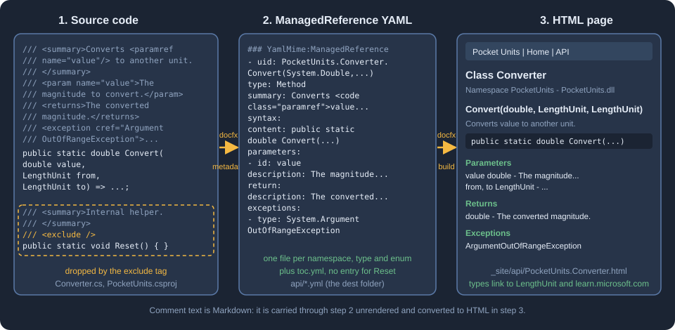

DotNet API Docs
|
This content was generated with the assistance of AI and should be verified against the official documentation before being relied on in production. |
This page was written against DocFX 2.81.0 (the latest release on NuGet, published on 2026-09-25) and checked on
2026-10-26. The examples were run with the docfx .NET tool inside the mcr.microsoft.com/dotnet/sdk:10.0 Docker image
(SDK 10.0.403) against the Pocket Units C# library, and the listings show the real output.
What the .NET API docs feature does
DocFX turns the XML documentation comments of a .NET code base into a browsable API reference. You write the comments in the source as usual (the syntax itself is covered in C# coding conventions and documentation and, for Visual Basic, in Visual Basic XML documentation, analyzers and code style), and DocFX produces one page for each namespace, type and member, with signatures, parameter tables, links between types and links to the Microsoft Learn pages of the framework types you use.
The work happens in two stages that can run on their own:
-
The metadata stage (
docfx metadata) reads the .NET input and writes API YAML files into the folder named bymetadata.dest. This is the only stage that understands C# and Visual Basic. -
The build stage (
docfx build) turns those YAML files, together with your Markdown articles and tables of contents, into HTML. Thedocfxcommand without a verb runs both. The wider pipeline is explained in Basic Concepts and Pipeline.
The official documentation notes that the Docset.Build method does not run the metadata stage; code that drives DocFX
from a program calls DotnetApiCatalog.GenerateManagedReferenceYamlFiles first (see the custom filter section below).
The figure follows the Pocket Units converter through both stages. The comment text is Markdown. The metadata stage
converts the XML tags such as paramref to HTML but leaves the Markdown in the text untouched, and the build stage
renders that Markdown into the page. The member marked with the exclude tag never reaches the YAML.

The Pocket Units project used on this page
The library is the Pocket Units length converter. Its layout is:
docfx.json
filterConfig.yml
index.md
toc.yml
src/PocketUnits/PocketUnits.csproj
src/PocketUnits/Converter.cs
src/PocketUnits/LengthUnit.cs
src/PocketUnits/Formatting/UnitFormatter.cs
src/PocketUnits/Internal/Cache.csThe project file targets net8.0 and enables GenerateDocumentationFile. The converter carries the comments that the
rest of the page works with: Markdown inside remarks and returns, an example, a seealso, an obsolete member and
a member marked with <exclude />:
namespace PocketUnits;
/// <summary>Converts lengths between <see cref="LengthUnit"/> values.</summary>
/// <remarks>
/// The converter is **stateless** and thread safe. See [the NIST guide](https://www.nist.gov/pml/special-publication-811)
/// for the conversion factors.
/// </remarks>
/// <example>
/// Convert ten kilometres to miles:
/// <code language="csharp">
/// double miles = Converter.Convert(10, LengthUnit.Kilometre, LengthUnit.Mile);
/// </code>
/// </example>
public static class Converter
{
private static double ToMetres(LengthUnit unit) => unit switch
{
LengthUnit.Metre => 1.0,
LengthUnit.Kilometre => 1000.0,
LengthUnit.Foot => 0.3048,
LengthUnit.Mile => 1609.344,
_ => throw new ArgumentOutOfRangeException(nameof(unit))
};
/// <summary>Converts <paramref name="value"/> from one unit to another.</summary>
/// <param name="value">The magnitude to convert.</param>
/// <param name="from">The unit of <paramref name="value"/>.</param>
/// <param name="to">The target unit.</param>
/// <returns>The converted magnitude, for example `3.28` feet for one metre.</returns>
/// <exception cref="ArgumentOutOfRangeException">A unit is not a defined <see cref="LengthUnit"/>.</exception>
/// <seealso cref="LengthUnit"/>
public static double Convert(double value, LengthUnit from, LengthUnit to)
=> value * ToMetres(from) / ToMetres(to);
/// <summary>Old name of <see cref="Convert"/>.</summary>
[Obsolete("Use Convert instead.")]
public static double Legacy(double value, LengthUnit from, LengthUnit to) => Convert(value, from, to);
/// <summary>Internal helper that must not appear in the API reference.</summary>
/// <exclude />
public static void Reset() { }
}Source: DocFX docs: .NET API Docs
The library also has a PocketUnits.Formatting namespace with a UnitFormatter class, a PocketUnits.Internal
namespace with a public Cache class that is an implementation detail, and the LengthUnit enum with the members
Metre, Kilometre, Foot and Mile in that declaration order.
Choosing the input
The metadata.src array selects what DocFX reads. Each entry is a file mapping: files lists glob patterns, src is
the folder they are resolved against (a path relative to docfx.json, which may point outside the folder with ..)
and exclude removes matches. Glob patterns themselves cannot walk out of the folder that holds docfx.json, which
is why a documentation project that lives next to the library uses src for the hop. DocFX supports four kinds of
input, which the official page distinguishes by file extension.
| Input | File extensions | How it is read |
|---|---|---|
Projects and solutions |
|
An MSBuild design-time build through |
Source files |
|
Compiled with the latest supported .NET SDK on the machine using |
Assemblies |
|
Reflection over the assembly plus the side-by-side XML documentation file. Independent of the build system and of the language. |
Source: DocFX docs: .NET API Docs
Projects
This is the configuration used for the Pocket Units metadata stage. The exclude patterns keep the compiler output
folders out of the file search, so that the project is not picked up twice:
{
"metadata": [
{
"src": [
{
"src": "src",
"files": [ "**/*.csproj" ],
"exclude": [ "**/bin/**", "**/obj/**" ]
}
],
"dest": "api"
}
]
}Running docfx metadata docfx.json printed:
Loading project /w/work/src/PocketUnits/PocketUnits.csproj
Determining projects to restore...
Restored /w/work/src/PocketUnits/PocketUnits.csproj (in 1.38 sec).
Processing PocketUnits
Creating output...
Build succeeded.
0 warning(s)
0 error(s)The Loading project line is the design-time build. If MSBuild fails to load a project, docfx metadata --logLevel verbose
prints the MSBuild log. The official page recommends running dotnet restore before docfx, because restoring is
still needed when Visual Studio is not installed even for projects without NuGet dependencies, and DocFX builds the
project with the Release configuration unless you set properties.
Solutions
A solution file is accepted in place of the project. The command line below creates a classic .sln and a .slnx for
the same project; pointing files at either one gave the same API files (PocketUnits.yml, PocketUnits.Converter.yml,
PocketUnits.LengthUnit.yml and the others) as the project input:
dotnet new sln --format slnx -n PocketUnits
dotnet sln PocketUnits.slnx add PocketUnits/PocketUnits.csproj{
"metadata": [
{ "src": [ { "src": "src", "files": [ "PocketUnits.slnx" ] } ], "dest": "api" }
]
}Source: DocFX docs: .NET API Docs
The log begins with Loading solution /w/sl/src/PocketUnits.slnx followed by one Loading project line for each
project in the solution.
Assemblies
When the library is already built, the assembly route does not need MSBuild at all, which makes it the recommended
workaround for project formats DocFX cannot load. The XML documentation file must sit next to the assembly, which
GenerateDocumentationFile takes care of (the build produced PocketUnits.dll, PocketUnits.pdb and
PocketUnits.xml):
{
"metadata": [
{
"src": [ { "src": "src/PocketUnits/bin/Release", "files": [ "net8.0/PocketUnits.dll" ] } ],
"dest": "out-dll",
"references": [ "path-to-reference-assembly.dll" ]
}
]
}Source: DocFX docs: .NET API Docs
DocFX looks for the reference assemblies in the same folder or in the global system assembly folder; references is
only needed when one cannot be found. The example above was run without the references line. The output contained the
same pages as the project input, Reset was still hidden by its exclude tag, and the only visible difference was that
the items carried no source entries, so there are no View Source links: those come from Source Link information in
the .pdb file next to the assembly, which this library does not have.
The F# limitation
F# projects are not supported as project input; the official page names .fsproj as an unsupported project format and
recommends generating the documentation from the compiled assemblies. This is the output of the metadata stage for a
default F# class library created with dotnet new classlib -lang "F#":
warning: Skip unsupported file /w/fs2/src/PocketUnitsFs/PocketUnitsFs.fsproj
warning: No .NET API project detected.
Creating output...
warning: No .NET API detected. Check the input files and earlier load or compilation diagnostics.
Build succeeded with warning.
3 warning(s)
0 error(s)Nothing is written to the output folder. The documentation lists no other F# route, so point files at the .dll
instead and keep the XML documentation file next to it.
The restore step, the Release configuration and MSBuild properties
For project and solution input DocFX runs dotnet restore first. Since 2.80.1 it stops the metadata stage when the
restore fails. Set noRestore to true to skip the step when the projects are
already restored, for example because a previous CI step did it. This is what happens if you set it and the project has
never been restored:
Loading project /w/nr/src/PocketUnits/PocketUnits.csproj
error: .../PocketUnits.AssemblyInfo.cs(13,12): error CS0246: The type or namespace name 'System' could not be found (are you missing a using directive or an assembly reference?)
error: .../PocketUnits.AssemblyInfo.cs(17,55): error CS0518: Predefined type 'System.String' is not defined or imported
Creating output...
warning: No .NET API detected. Check the input files and earlier load or compilation diagnostics.
Build failed.
1 warning(s)
20 error(s)DocFX exited with code 255 and wrote no files. After dotnet restore in the project folder the same configuration,
with "noRestore": true, succeeded. A missing restore therefore does not say "run restore"; the compiler errors about
System are the signature of the problem.
properties passes MSBuild properties, like the /property:name=value option of dotnet build. The most common use is
TargetFramework. A project that targets several frameworks is built once for each of them, and the official page
suggests naming one to make the stage faster:
{
"metadata": [
{
"src": [ { "src": "src", "files": [ "**/*.csproj" ] } ],
"dest": "api",
"properties": { "TargetFramework": "net8.0" }
}
]
}Source: DocFX docs: .NET API Docs
The page does not say that a multi-targeted project fails without it. A copy of Pocket Units with
<TargetFrameworks>net8.0;net10.0</TargetFrameworks> produced the API files both with and without the property. Two
rules of the reference are worth keeping in mind. For source-file input only DefineConstants and AllowUnsafeBlocks
are honoured and any other property is ignored without a message. And references is used for assemblies and source
files, not for solution or project input, which take their references from the project.
SDK compatibility
DocFX publishes an SDK compatibility report that is refreshed by a nightly workflow of its repository. It records which .NET SDK and project target framework combinations the tool was able to read, and its authors state that the results are automated observations and not a support guarantee; a combination that is not in the matrix has no claim either way. The configured matrix, as described in the maintenance guide of the report, has five rows of SDK and project target:
| SDK installed (latest of the channel) | Project target framework |
|---|---|
8.0 |
|
9.0 |
|
10.0 |
|
11.0 |
|
11.0 |
|
Source: DocFX docs: SDK compatibility
Each row runs two scenarios: a plain C# class (its public type and method must appear in the metadata) and a Razor
component with @inherits and a code-behind override. Each row is run against the released DocFX tool (target
net10.0) and against the nightly tools built for net8.0, net9.0, net10.0 and net11.0, on Linux only. The
columns of the report show the DocFX version and the tool target framework, not the target of your project. The
report is a good first stop when a newer SDK fails to read a project, because source generators shipped with an SDK can
need a newer Roslyn compiler than the one bundled with an older tool target.
DocFX 2.81.0 adds a .NET 11 release-candidate target and keeps the 8, 9 and 10 targets. In the scratch environment of
this page, the 2.81.0 tool read a net8.0 project and a net10.0 project with the SDK 10.0.403 without problems.
Comments are Markdown
DocFX treats the text inside the XML tags as Markdown. The Pocket Units comments use **stateless** and an inline
link in remarks, and backticks in returns. After the metadata stage the Markdown is still in the YAML, converted
only where an XML tag was involved (the see and paramref tags become xref and code elements):
summary: Converts <code class="paramref">value</code> from one unit to another.
syntax:
return:
type: System.Double
description: The converted magnitude, for example `3.28` feet for one metre.Source: DocFX docs: .NET API Docs
The build stage renders them, so the page contains <strong>stateless</strong>, an anchor for the NIST link and
<code>3.28</code>. The same comments appear in the IntelliSense window of an editor, which does not render Markdown,
so heavy formatting there looks like noise. Setting shouldSkipMarkup to true makes DocFX leave the text alone. The
YAML then records shouldSkipMarkup: true, and the build leaves the characters as written: the built page showed
**stateless** and the backticks literally.
{
"metadata": [
{
"src": [ { "src": "src", "files": [ "**/*.csproj" ] } ],
"dest": "api",
"shouldSkipMarkup": true
}
]
}Source: DocFX docs: .NET API Docs
DocFX supports the recommended XML tags of the C# language reference. The ones used above produce these parts of the
rendered page: summary the description under the heading, param the Parameters list, returns the Returns list,
exception the Exceptions list, seealso the See Also list, example the Examples section and remarks the Remarks
section. The example tag has to be a sibling of remarks. When the example was nested inside remarks, the built
page showed it as a raw example element inside the Remarks text instead of an Examples section. codeSourceBasePath is the base folder for <code source="Example.cs"/> references, which pull code for
examples from a file instead of the comment.
Hiding APIs
By default DocFX documents only the types and members that code in another assembly can call. It
also applies a built-in set of filter rules, in defaultfilterconfig.yml in the DocFX repository, which hide common
patterns such as members marked with EditorBrowsableAttribute. There are several ways to hide more, from the
narrowest to the broadest.
The exclude tag
Put <exclude /> in the comment of a type or member to drop that one API. This is the tag on Reset:
/// <summary>Internal helper that must not appear in the API reference.</summary>
/// <exclude />
public static void Reset() { }Source: DocFX docs: .NET API Docs
The metadata stage accepted it for project and for assembly input, and Reset appears neither in the YAML nor in the
pages. It also stays hidden when includePrivateMembers is on.
Filter rules in a YAML file
metadata.filter points to a YAML file with an apiRules list. The rules are tried in order and processing stops at
the first rule that matches an API. An API that matches no rule is included under the default filter. A rule is an
include or an exclude and carries one or more of these conditions:
| Condition | Meaning |
|---|---|
|
A regular expression tested against the UID of the API. Every API has a UID, the unique identifier DocFX computes
(for example |
|
The kind of API: |
|
Matches APIs that carry an attribute. |
Source: DocFX docs: .NET API Docs
Filtering is hierarchical. Excluding a namespace removes the types and members inside it, and excluding a type removes
its members. The Pocket Units filter file hides the Internal namespace and every member marked [Obsolete]:
apiRules:
- exclude:
uidRegex: ^PocketUnits\.Internal
type: Namespace
- exclude:
hasAttribute:
uid: System.ObsoleteAttribute
type: MemberSource: DocFX docs: .NET API Docs
It is referenced from docfx.json with "filter": "filterConfig.yml". With it, PocketUnits.Internal.yml and
PocketUnits.Internal.Cache.yml are not written, and neither Legacy nor Reset is in PocketUnits.Converter.yml.
Without the hasAttribute rule the YAML of Legacy lists System.ObsoleteAttribute and the declaration shows
[Obsolete("Use Convert instead.")].
Because the first matching rule wins, an include rule placed before a broader exclude carves an exception out of
it. The official example hides everything under Microsoft.DevDiv except Microsoft.DevDiv.SpecialCase:
apiRules:
- include:
uidRegex: ^Microsoft\.DevDiv\.SpecialCase
- exclude:
uidRegex: ^Microsoft\.DevDivSource: DocFX docs: .NET API Docs
Switches that widen or narrow the default
-
disableDefaultFilterturns the built-in rules off. -
includePrivateMembersadds private and internal APIs. The declarations then show theprivateandinternalkeywords. With it enabled, the Pocket Units page gainedToMetres(LengthUnit)with the signatureprivate static double ToMetres(LengthUnit unit). -
includeExplicitInterfaceImplementationsadds explicit interface implementations. Both switches default tofalse. -
allowCompilationErrorslets the stage go on when the code does not compile.
The warning "No .NET API detected"
This warning does not tell you the cause. It means that no metadata was produced, because the input did not load, the
globs matched nothing useful, or everything was filtered out. Look at the diagnostics before it, check that
metadata.src matches the files you intended, and review visibility, the default filter, <exclude /> tags and any
custom filter file (the warning names the file when one is configured).
A custom filter written in code
When rules in YAML are not enough, a program can call the metadata stage itself and supply two callbacks. IncludeApi
decides about a symbol and IncludeAttribute about an attribute shown on a symbol. Each returns a
SymbolIncludeState: Include, Exclude or Default. The callbacks run before the default rules and after the
accessibility rules, so private members cannot be switched on unless includePrivateMembers is true. Hiding a symbol
hides everything it contains. This console project, which references the Docfx.Dotnet package, hides every API whose
name ends in Cache and the Obsolete attribute:
<Project Sdk="Microsoft.NET.Sdk">
<PropertyGroup>
<OutputType>Exe</OutputType>
<TargetFramework>net10.0</TargetFramework>
<Nullable>enable</Nullable>
<ImplicitUsings>enable</ImplicitUsings>
</PropertyGroup>
<ItemGroup>
<PackageReference Include="Docfx.Dotnet" Version="2.81.0" />
<PackageReference Include="Microsoft.CodeAnalysis.Workspaces.MSBuild" Version="5.9.0" />
</ItemGroup>
</Project>using Docfx.Dotnet;
using Microsoft.CodeAnalysis;
var options = new DotnetApiOptions
{
// Hide every API whose name ends in "Cache".
IncludeApi = symbol => symbol.Name.EndsWith("Cache")
? SymbolIncludeState.Exclude
: SymbolIncludeState.Default,
// Hide the Obsolete attribute from declarations.
IncludeAttribute = symbol => symbol.ToDisplayString() == "System.ObsoleteAttribute"
? SymbolIncludeState.Exclude
: SymbolIncludeState.Default
};
await DotnetApiCatalog.GenerateManagedReferenceYamlFiles(args[0], options);Source: DocFX docs: .NET API Docs
Run with dotnet Gen.dll docfx.json, it wrote the API files without Cache and without the [Obsolete(...)] text in
the Legacy declaration; the method itself stayed in the reference, because IncludeAttribute hides attributes and
not members. The explicit Microsoft.CodeAnalysis.Workspaces.MSBuild reference is not in the official snippet. Without
it, the first run failed with The build host could not be found at '.../BuildHost-netcore/Microsoft.CodeAnalysis.Workspaces.MSBuild.BuildHost.dll',
because the build host folder was not copied to the output folder of the console project.
Layout of the generated reference
Three options of the metadata section decide how the API is organized in the table of contents and in the pages.
| Option | Values | Effect |
|---|---|---|
|
|
Whether namespaces are listed side by side in |
|
|
Whether members are sections of the page of their type, or have a page of their own. |
|
|
How the categories (classes, enums, and so on) are shown. It only applies to the |
|
|
The order of the members of an enum. |
With the defaults the generated toc.yml of Pocket Units lists PocketUnits and PocketUnits.Formatting as two
siblings, ends with memberLayout: SamePage, and the enum members come out as Foot, Kilometre, Metre and Mile.
With "namespaceLayout": "nested", "memberLayout": "separatePages" and "enumSortOrder": "declaringOrder" the same
file becomes:
### YamlMime:TableOfContent
items:
- uid: PocketUnits
name: PocketUnits
type: Namespace
items:
- uid: PocketUnits.Formatting
name: Formatting
type: Namespace
items:
- uid: PocketUnits.Formatting.UnitFormatter
name: UnitFormatter
type: Class
- uid: PocketUnits.Converter
name: Converter
type: Class
- uid: PocketUnits.LengthUnit
name: LengthUnit
type: Enum
memberLayout: SeparatePagesThe enum members are Metre, Kilometre, Foot and Mile, and the build wrote one page for each member, for example
_site/api/PocketUnits.Converter.Convert.html and _site/api/PocketUnits.Formatting.UnitFormatter.Format.html, next to
the type pages. Nested layout is only visible when the namespaces share a prefix. The global namespace has no name; set
globalNamespaceId if you want one.
Output formats
outputFormat selects what the metadata stage writes. The default mref writes ManagedReference YAML, which the
template turns into pages. The other two are meant for custom pipelines and newer templates:
| Value | Result in the Pocket Units run |
|---|---|
|
|
|
The same file names, but the content is |
|
One CommonMark file for each namespace and type ( |
The apiPage and markdown files were fed to docfx build with the modern template and produced HTML pages for
every namespace and type. When the output is markdown, files listed in build.content must include *.md as well as
the YAML. The modern template is the one these formats are aimed at; the page on
Templates and Customization compares it with default.
View Source links
The View Source link on each page depends on Git information. disableGitFeatures removes the links. For assemblies,
the link comes from Source Link data in the .pdb. Version 2.81.0 added sourceLinkExclude, a list of glob patterns
matched against source document paths (for a DLL the path recorded in the PDB, which may come from another machine)
to hide the link of selected documents, for example generated files, without removing the APIs. It defaults to an
empty list, matching is case-insensitive and any matching pattern excludes the document. The reference shows
**/ExampleGenerator/** to hide the links of all files from a source generator. This option was not exercised here
because the sample has no Source Link mappings.
The whole Pocket Units configuration
Putting the choices together, this is the docfx.json used for the final run. The build section reads the generated
YAML, the table of contents and the Markdown articles, and uses both templates:
{
"metadata": [
{
"src": [
{
"src": "src",
"files": [ "**/*.csproj" ],
"exclude": [ "**/bin/**", "**/obj/**" ]
}
],
"dest": "api",
"filter": "filterConfig.yml",
"namespaceLayout": "nested",
"memberLayout": "separatePages",
"enumSortOrder": "declaringOrder"
}
],
"build": {
"content": [ { "files": [ "api/**.yml", "toc.yml", "*.md" ] } ],
"output": "_site",
"template": [ "default", "modern" ]
}
}Source: DocFX docs: .NET API Docs
Running docfx docfx.json ended with:
Building 5 file(s) in ManagedReferenceDocumentProcessor(BuildManagedReferenceDocument=>SplitClassPageToMemberLevel=>ValidateManagedReferenceDocumentMetadata=>ApplyOverwriteDocumentForMref=>FillReferenceInformation=>FillMetadata)...
Applying templates to 10 model(s)...
XRef map exported.
Build succeeded.
0 warning(s)
0 error(s)The generated page for Convert has a Parameters list (value, from and to, with the types linked to
LengthUnit or to learn.microsoft.com for double), a Returns list, an Exceptions list and a See Also list, all taken
from the comment. The toc.yml in the root (a link to the api/ folder) and the other TOC keys are covered in
Table of Contents. How <see cref="LengthUnit"/> becomes a link,
and how to link to the framework or to other sites, is in
Links and Cross References. The meaning of every other
key of the file is in docfx.json.
Pitfalls
-
Stale output. The metadata stage writes files into
destand does not delete the ones it no longer produces. After adding the Pocket Units filter to a folder that already held unfiltered output,PocketUnits.Internal.ymlandPocketUnits.Internal.Cache.ymlwere still there (the newtoc.ymlno longer listed them), and a build that readsapi/**.ymlwould still render them. Delete thedestfolder when you change a filter. -
An
exampletag nested inremarksis not rendered as an Examples section. Make it a sibling. -
noRestore: trueon a project that was never restored produces compiler errors aboutSystem, not a restore message, and a process exit code of 255. -
A solution or project that MSBuild cannot load gives a vague "No .NET API detected" warning. Check the earlier lines of the log and use
--logLevel verboseto see the MSBuild log. -
A
.fsprojis skipped with a warning; use the compiled assembly instead. -
The glob patterns in
filescannot go above the folder that holdsdocfx.json. Usesrcfor that. -
Markdown in comments is also shown by editors that do not render Markdown; use
shouldSkipMarkupor keep the formatting simple. -
A filter rule that contains
^or$is a regular expression, so a dot in a UID must be written\.. -
categoryLayouthas no effect on the defaultmrefoutput.